The image below displays the initial screen that you view when in the Incidents tab. Incidents can be created through an employee’s My Health account or by following the steps to create a new incident.
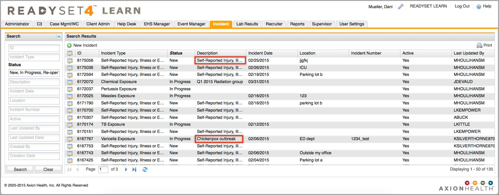
Creating a New Incident
Click New Incident.
Select the Incident Type and fill in all other pertinent information.
Click Save.
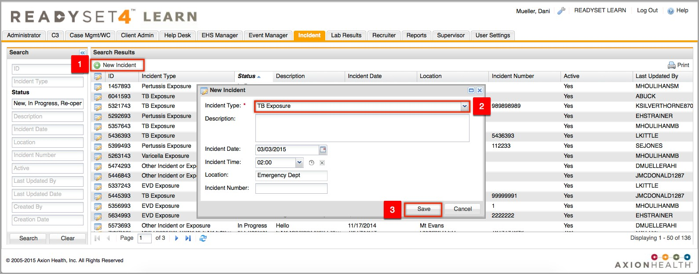
Incident Details Screen
After creating your new incident, you are returned to the Incident Details screen. Here you can edit or update the Incident Details. For example, if the employee self-reported an incident in their My Health account, you would want to change the Incident Type to the appropriate Incident, Exposure or Illness. If you make edits, be sure to click Save when completed.
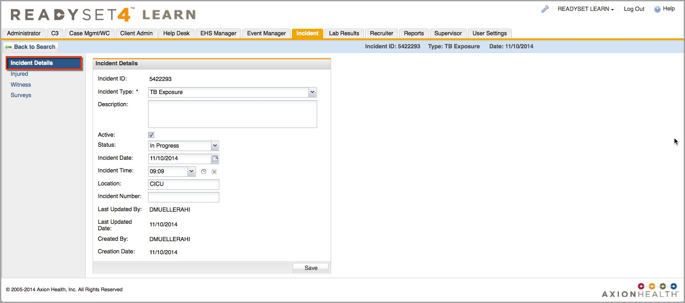
Adding Injured/Exposed Employees to the Incident
Click Injured in the left menu.
Click Add Employee(s).
Click Search to find the employee(s).
Select the checkbox to select the employee(s).
Click Select Highlighted.
Repeat steps 2-5 to add additional employees to the incident, or click Close.
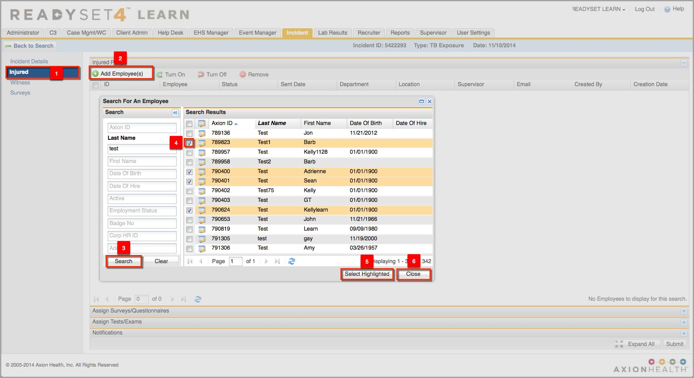
Once you have added the employees to the incident the steps below show how to assign surveys, add test/exam forms, and send email notifications for all involved in the incident. These are optional based on your processes and workflows.
Ordering Surveys to the Injured/Exposed Employees Medical Record
Click to the right of the Assign Surveys/Questionnaires section header.
Click Add.
Select the checkbox beside the survey(s) you want to add.
Click Select Highlighted.
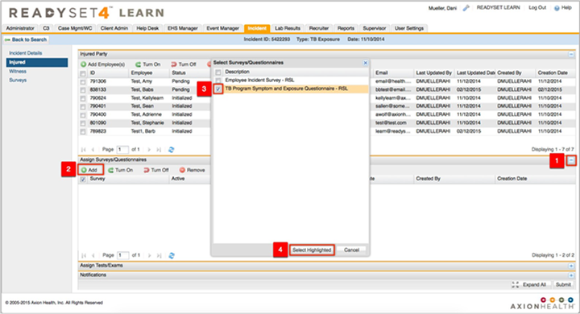
Adding Charting Forms to the Injured/Exposed Employee Medical Chart
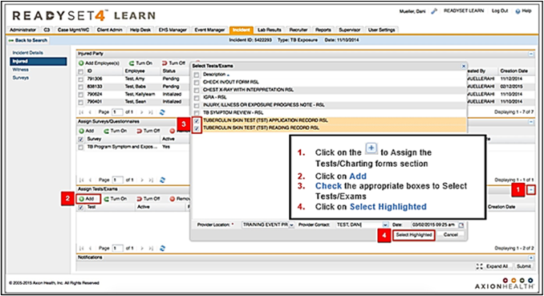
Setting up a Notification to be sent to the Injured/Exposed Employees
Click to the right of the Notifications section header.
Click Add Notification.
Select the appropriate Notification Type (or use the Blank to create your own).
Click Save.
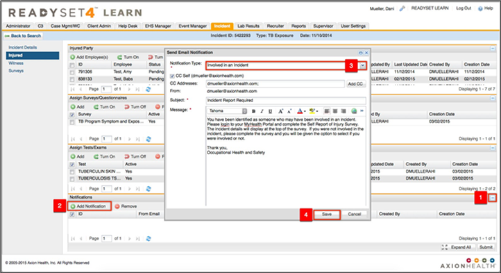
Submitting the Completed Incident
After adding notifications (as needed) you will then click Submit, which means all selected surveys, tests/exams will be activated and notifications (emails) will be sent.
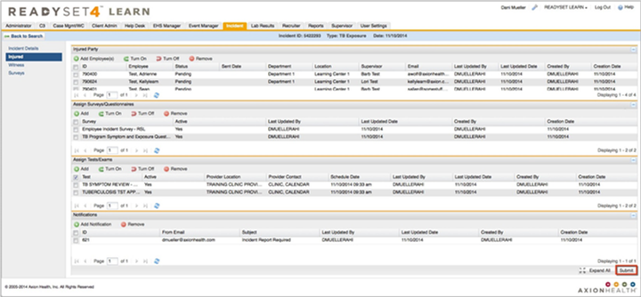
Viewing Surveys that are Assigned to the Incident
Click Surveys to view the Survey Status of each employee associated with the incident.
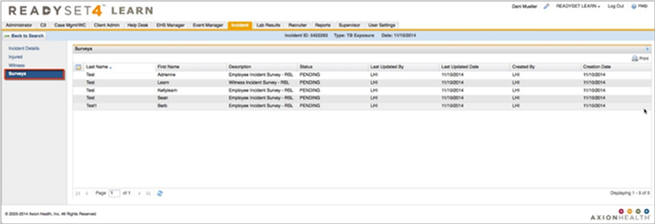
Searching for an Incident
Use the Search criteria to locate the appropriate incident, then double-click on the incident to open it to add/edit information.
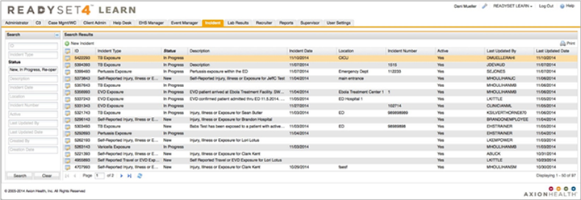
Add Additional Employees to an Existing Incident
Click Add Employee(s).
Click Search to find the employee(s).
Select the checkbox to select the employee(s).
Click Select Highlighted.
Repeat steps 2-4 to add additional employees to the incident, or click Close.
* Then reference steps (screenshots) e, f, g & h (if needed) to initialize the newly added employee(s).
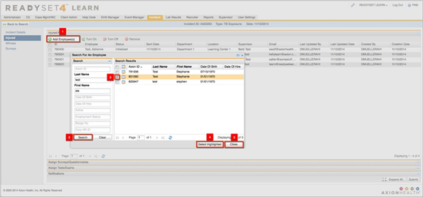
Add Additional Surveys and Charting Forms to Employees Currently in an Incident
Select the checkbox beside the employee.
Click Turn On.
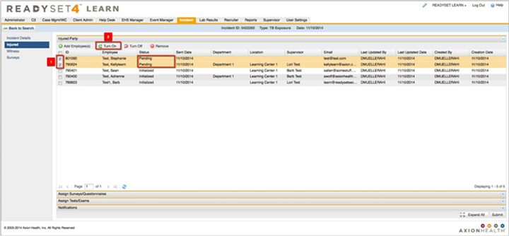
The status will change from "Initialized" to "Pending". You can now add additional surveys and charting forms to the Employee Medical record. Remember to “Turn off” or “Turn On” surveys, charting forms and notifications if needed.
Adding Witnesses to an Incident
You can also add a witness to the incident who witnessed the injury, illness or exposure occur. The witness would have a Witness Incident Survey initialized for them to complete.
Click Witness in the left menu.
Click Add Employee(s).
Click Search to find the employee(s).
Select the checkbox to select the employee(s).
Click Select Highlighted.
Click Close.
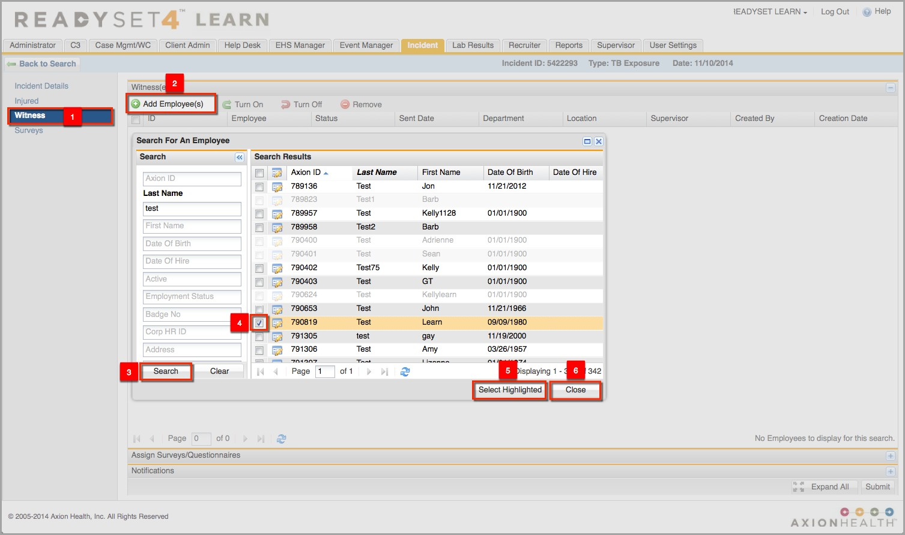
Adding Witness Surveys to an Incident
Click to the right of the Assign Surveys/Questionnaires section header.
Click Add.
Select the checkbox beside the Witness Incident Survey.
Click Select Highlighted.
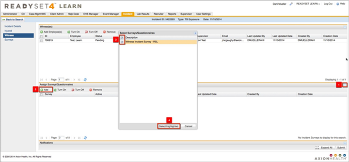
Adding a Witness Notification
Click to the right of the Notifications section header.
Click Add Notification.
Select the appropriate Incident Type (or use Blank to create your own).
Click Save.
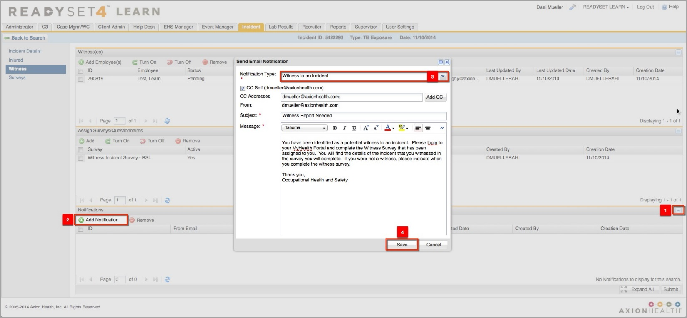
Activating a Witness Incident Survey to the Incident
When you have completed the Witness section of the incident, click Submit to initialize the Survey and/or Notification email.
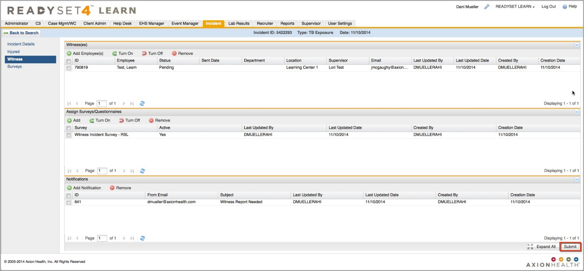
Sample My Health Account Witness Incident Survey
The Incident Details are listed at the top of the survey for the witness to view.